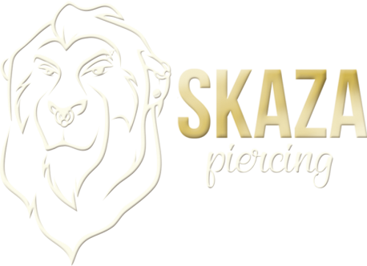

CENNIK
Ceny mogą ulegać zmienie i nie być zaktualizowane na stronie. Prosimy o weryfikacje w studio, bądź przez social media.
UCHO
- Lobe (8) -120 zł
- Upper Lobe (12) -120 zł
- Helix/Flat (14) -140 zł
- Forward Helix (14) -140 zł
- Tragus (14) -140 zł
- Conch (14) -140 zł
- Anti targus (15) -150 zł
- Rook (15) -150 zł
- Daith (15) -150 zł
- Snug (15) -150 zł
- Industrial (16) -160 zł
CIAŁO
- Pępek (15) -160zł
- Sutek/ 2 Sutki (18) -180zł/320zł
- Microdermal (18) -200zł
- Surface (18) -220zł
TWARZ
- Nostril (15) -150 zł
- Septum (15) -160 zł
- Bridge (15) -160 zł
- Brew (15) -150 zł
- Labret (15) -150 zł
- Vertical Labret (15) -150 zł
- Madonna/Monroe (15) -150 zł
- Medusa (15) -150 zł
- Snake Bites (15) -270 zł
- Język (15) -150 zł
- Smiley (15) -150 zł
Dodatkowe usługi
- 2 lub 3 planowe konsultacje dla klientów - darmowe
- Konsultacje dla klientów innego studia oraz po nieprzestszeganiu zaleceń 50-100zł
-
Wymiana kolczyka:
- a.) 1-2 szt -30zł + koszt kolczyka
- b.) 3 szt i więcej -40zł + koszt kolczyka
- Anodyzacja kolczyka -10zł/szt.
- Czyszczenie przekłucia -30zł/szt.
- Czyszczenie kolczyka -30zł/ szt.
- Rozepchanie zwężonego kanału -40zł + koszt kolczyka
- Założenie kolczyka który wypadł na etapie gojenia -30zł + koszt kolczyka
- Dokręcenie kulki -od 20 zł
W cene przekłucia wchodzi
- Materiały oraz wysterylizowane/jednorazowe narzędzia potrzebne do wykonania przekłucia.
- Sterylny, standardowy tytanowy kolczyk o odpowiednio dobranym rozmiarze (możliwość wyboru anodyzowanego lub ozdobnego kolczyka za dopłatą)
- Instrukcja jak prawodłowo dbać o przekłucie
- Konsultacje przez cały okres trwania gojenia
*W nawiasie przy nazwie przekłucia został podany minimalny wiek od którego wykonujemy dane przekłucia
Jednorazowo wykonujemy max 3-4 przekłucia. Drugie i każde kolejne przekłucia RABAT 20zł
Przy większej ilości przekłuć na jednej wizycie, cena ustalana jest indywidualnie.
DODATKOWE INFORMACJE
- Minimalny wiek podany przy każdym przekłucia musi być skończony w momencie wykonania przekłucia Przykład: jeżeli chcesz wykonać przekłucie w pępku a 15 urodziny masz za miesiąc, to przekłucie może zostać wykonane najszybciej za miesiąc w dniu Twoich urodzin oraz rodzic/OPIEKUN PRAWNY (To nie to samo co osoba dorosła!) musi na miejscu podpisać zgodę na wykonanie przekłucia.
- Konsultacje to nie to samo co wymiana kolczyka. 2 lub 3 konsultacje są bezpłatne na etapie gojenia się przekłucia wykonywanego u nas w studiu (w zależności od konkretnego przekłucia), jeżeli stosujesz się do naszych zaleceń oraz nie jest konieczna wymiana kolczyka. Wymiana kolczyka jest płatna + koszt kolczyka (patrz cennik). Konsultacja po nieprzestrzeganiu zaleceń jest płatna + koszt kolczyka (patrz cennik)
- Przed konsultacją należy wyczyścić przekłucia. Jeżeli na kolczyku będzie niewyczyszczona warstwa brudu doliczymy za czyszczenie kolczyka (patrz cennik).
- Nie ma możliwośći wymiany na niesterylny kolczyk niewiadomego pochodzenia jeżeli przekłucie jest niewygojone. Na świeże przekłucia również nie zakładamy waszych kolczyków, ponieważ nie mamy żadnej gwarancji co do materiału oraz sterylności.